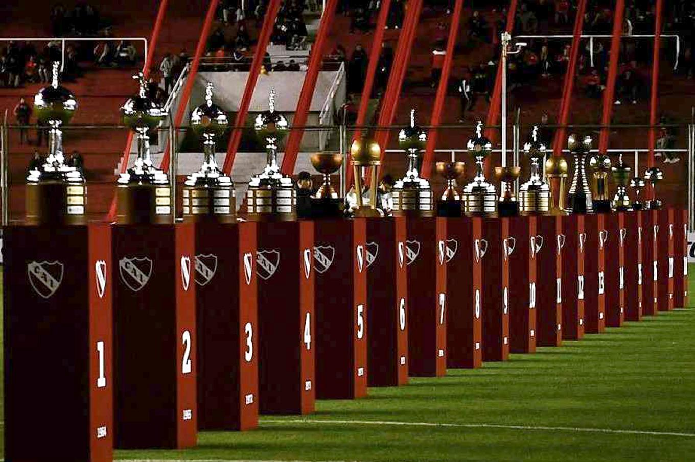
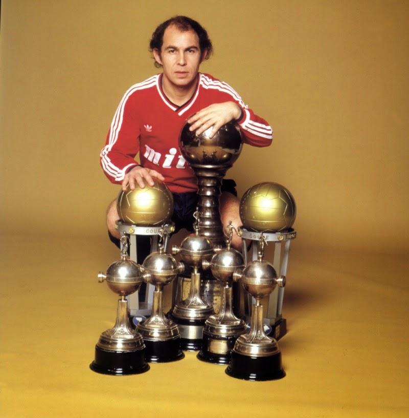

HISTORIA

Independiente tuvo su origen el 4 de agosto de 1904. En la avenida de Mayo, de la ciudad de Buenos Aires, se encontraba "A la ciudad de Londres", una de las tiendas de ropa y calzado de mayor categoría en la época, cuyos empleados habían formado, en 1903, un club de fútbol llamado Maipo-Banfield F.C., que participaba en torneos amistosos. Muchos de los empleados tenían intenciones de jugar al "football", que estaba de moda. Es así que, como no había lugar para todos, decidieron marginar a los empleados de menor edad. Esta situación provocó que los chicos se reunieran en un bar cerca de dicha tienda, donde el líder de los disconformes, Rosendo Degiorgi, propuso "independizarse" y formar un club nuevo: Independiente Football Club.
Es uno de los clubes más laureados y con mayor renombre históricamente de Argentina, América del Sur y el mundo. En el ámbito local, «El Rojo» es considerado uno de los cinco grandes del fútbol argentino junto a Boca Juniors, River Plate, Racing Club y San Lorenzo de Almagro. Con Racing protagoniza el denominado Clásico de Avellaneda, en el cual domina el historial con más victorias.
PALMARES
A nivel nacional, Independiente es uno de los clubes con mayor cantidad de títulos en la historia del fútbol argentino: 25 títulos oficiales. Incluyen 16 ligas de Primera División y 9 copas nacionales. El campeonato ganado en 1922 fue el primer título de liga de la historia del club.
En Sudamérica, el «Rey de Copas», como se lo conoce, es el único club que ha ganado siete Copa Libertadores de América. Tras sus primeros títulos ganados en 1964 y 1965, da comienzo a su seguidilla de títulos en el plano internacional. Seguidamente, se convierte en el único club en ganar cuatro copas de manera consecutiva en 1972, 1973, 1974 y 1975, récord que mantiene hasta hoy. Su séptima copa llegaría en 1984.
Del mismo modo, es también, uno de los máximos vencedores de otras tres competiciones: Copa Interamericana, Supercopa Sudamericana y Copa Sudamericana. Con consagraciones en los años 1973, 1974 y 1976; 1994 y 1995; 2010 y 2017, respectivamente.
A nivel mundial, el club de Avellaneda consiguió dos títulos de Copa Intercontinental ganados en 1973 y 1984, antes de ser reemplazada por la Copa Mundial de Clubes, ostentando entre sus pergaminos el mote de «Campeón del Mundo».
IDOLOS
A la hora de hablar de los nombres mas significativos para la historia del club, el primero de ellos cobra unanimidad absoluta. Ricardo Enrique Bochini es el maximo idolo de Independiente. Obtuvo la cantidad de 13 títulos (4 torneos locales, 4 Libertadores, 2 Intercontinentales y 3 Interamericanas), pero su maximo logro refiere a su fidelidad a la camiseta roja. El "Bocha" no jugo en ningun otro club en toda su carrera. jugó la inpresionante cantidad de 714 partidos entre 1972 y 1991, convirtiendo 107 goles con la camiseta del Rojo. Tambien formo parte del equipo argentino Campeon del Mundo en 1986.
Arsenio Erico es otro de los grandes nombres en la historia de Independiente. El "hombre récord" es el máximo goleador de la historia en el fútbol argentino, considerado por la FIFA como el mejor jugador paraguayo de todos los tiempos, se ubica en el puesto 34 de los máximos goleadores. Jugó en el Rojo entre 1934 y 1946, con una interrupción en 1942 cuando vistió la camiseta de Nacional de Paraguay, disputando un total de 339 partidos y 304 goles, 0,89 por encuentro.
En lo que respecta a las ultimas decadas, Sergio Aguero represento la figura de idolo en las nuevas generaciones. Debuto en Independiente el 5 de julio de 2003 convirtiendose en el jugador mas joven en debutar en la Primera Division del futbol argentino. Tras un gran paso en el club y con grandes actuaciones frente a Racing, el "Kun" continuo con su carrera en Europa convirtiendose en los mejores jugadores del mundo.
ULTIMO PARTIDO
Torneo · Fecha

PROXIMO PARTIDO
Torneo · Fecha